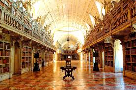
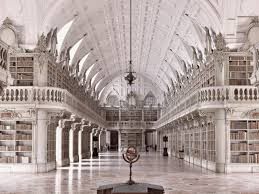
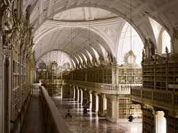

  
Королевский португальский читальный зал – традиционная библиотека и португалоязычное культурное учреждение, расположенное на улице Камоэнса в центре города Рио-де-Жанейро. Он внесен в списки Государственного института культурного наследия.
Библиотеку основали в 1837 году сорок три португальских иммигранта - политических беженца, для развития культуры среди своей общины в тогдашней столице империи. Это была первая ассоциация этой общины в городе. Здание по проекту португальского архитектора Рафаэля да Силва и Кастро было построено между 1880 и 1887 году в манере нео-мануэлино. Этот архитектурный стиль с избыточными элементами готического ренессанса преобладал во время португальских открытий времен царствования короля Мануэля I (1495-1521). Педро II поместил краеугольный камень в основание здания 10 июня 1880 года. На церемонии открытия 10 сентября 1887 г. присутствовала принцесса Изабель, вместе с мужем, графом д'Э.
Фасад здания, сходный с монастырем Жеронимуш в Лиссабоне, был выполнен Джермано Хосе Салли из известняка в Лиссабоне и привезен на корабле в Рио. Фасад отделан медальонами, а четыре украшающие его скульптуры представляют Кабрала, Камоэнса, Инфанте Генри и Васко да Гама. Интерьер также следует стилю нео-мануэлино в отделке ставен, деревянных полок для книг и прочих элементов. Под потолком читальни подвешена роскошная кованая люстра, дополнительный свет дает мансардное окно.
Библиотека открылась для публичного посещения в 1900 году. Она располагает самой большой коллекцией португальских трудов за рубежом страны. Среди примерно 350 000 единиц встречаются редкие публикации, датированные началом 16 века. Это первое издание «Луизиад» Камоэнса (1572), «Таинства короля Мануэля» (1521), рукописи и многие другие. Ежегодно библиотека получает около шести тысяч наименований книг из Португалии. Отдельная ценность – коллекция картин Хосе Maльоa, Освальдо Teйксейра, Карлоса Рейса, Эдуардо Мальта и Генри Медина.
Ежедневно в залы приходят около ста пятидесяти посетителей. В июле 2014 года здание получило 4-ю позицию среди 20 красивейших библиотек в мире по версии журнала «Тайм». Исторические интерьеры сооружения использовались в качестве съемочной площадки для фильмов, телесериалов и телевизионных шоу.